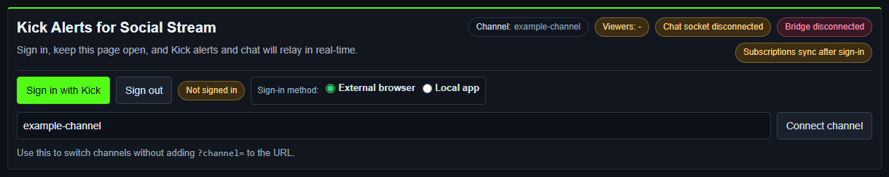

Choose A Kick Source Mode
| Režiim | Best For | Sign-In |
|---|---|---|
| Standard | Reading visible Kick chat from the normal or popout chat page. | Usually not required for public chat capture. The page still must load and show chat. |
| WebSocket | Structured chat plus official follow, subscription, reward, KICKs, moderation, and live-status events. | Public chat can connect separately, but OAuth is required for official event subscriptions, sending chat, and channel/moderation controls. |
Use The URL Slug, Not The Display Name
For https://kick.com/example-channel, the source value is example-channel. You may paste the full URL or enter only that slug.
Kick display names can differ from URL slugs. A display name may contain underscores while the URL uses hyphens. Copy the slug from the address bar instead of retyping the displayed name.
Desktop App Setup
- Select Add source → Kick.
- Paste the full Kick channel URL or enter its URL slug.
- Leave WebSocket selected for structured alerts. Kick currently defaults to WebSocket mode in the app.
- Select Aktiveeri allikas.
- In the Kick source window, select Sign in with Kick and approve the requested permissions.
- Keep the source window open and check the Channel, Chat socket, Bridge, and Subscriptions status chips.

Browser Extension WebSocket Setup
- Install and enable the current Social Stream Ninja extension.
- Avage Kick WebSocket source page.
- Replace
example-channelwith the channel's exact URL slug. - Select Connect channel if the page has not connected automatically.
- Select Sign in with Kick to enable official event subscriptions and account controls.
- Keep the page open while streaming.
https://socialstream.ninja/sources/websocket/kick.html?channel=CHANNEL_SLUGFor Standard capture, open https://kick.com/CHANNEL_SLUG or its popout chat and leave chat visible.
What The Current Kick Login Requests
| Permission Group | Used For |
|---|---|
| User and channel read | Resolve the signed-in user, channel, category, and current channel information. |
| Channel write | Update stream title/category from Advanced Controls. |
| Rewards | Read channel reward information and normalize reward redemptions. |
| Chat write | Send broadcaster or bot chat from the source. |
| Event subscriptions | Subscribe to official real-time Kick events. |
| Moderation | Ban/unban users and manage chat messages when the account has permission. |
| KICKs | Read KICKs-related support information. |
Kick's current OAuth flow uses authorization-code login with PKCE. Do not paste an access token, refresh token, client secret, or browser cookie into a guide, chat, or support ticket.
Official references: OAuth 2.1, scopes, and the Kick API reference.
Official Events The Current Source Subscribes To
- Chat:
chat.message.sent. - Follows:
channel.followed→ Social Streamnew_follower. - Subscriptions: new, renewal, and gifts →
new_subscriber,resub, jasubscription_gift. - Rewards:
channel.reward.redemption.updated→reward. - KICKs gifts:
kicks.gifted→donationwith the KICKs amount. - Moderation:
moderation.banned. - Stream status:
livestream.status.updated→stream_onlinevõistream_offline.
Raid/host note: Kick's current official webhook list does not publish a raid/host event. Social Stream has compatibility handling if Kick exposes one through a connected feed, but a Kick raid alert should not be treated as guaranteed.
See Kick's current official webhook event list and Social Stream's Events and Alerts Compatibility guide.
Fix A Kick Source That Will Not Connect
- Copy the exact channel slug from the Kick URL.
- Check that Channel shows the intended slug and Chat socket changes from disconnected.
- If chat works but official alerts do not, sign in again and wait for Sild ja Subscriptions to connect.
- If embedded login or CAPTCHA fails, use External browser töölauarakenduses.
- Confirm the signed-in account owns or may moderate the channel before testing send/moderation controls.
- Check the Social Stream dock before debugging OBS. If the dock receives Kick data, the remaining problem is the overlay or OBS URL.